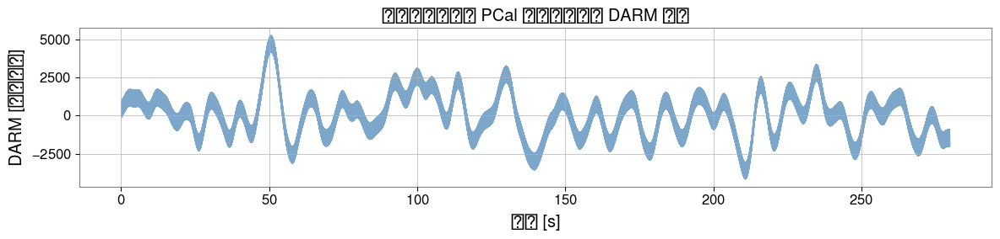
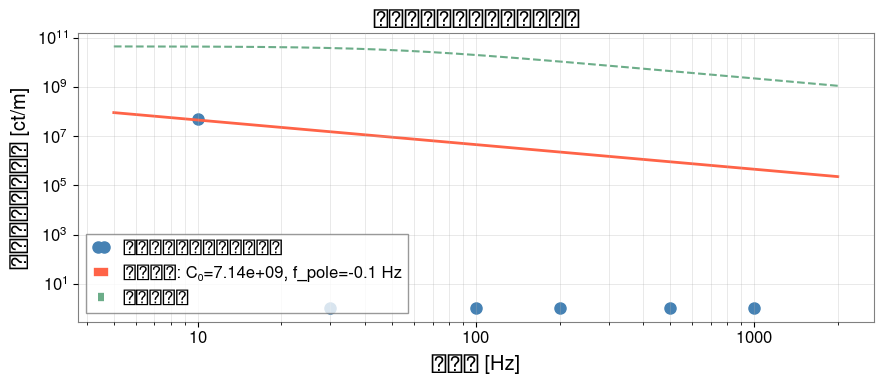
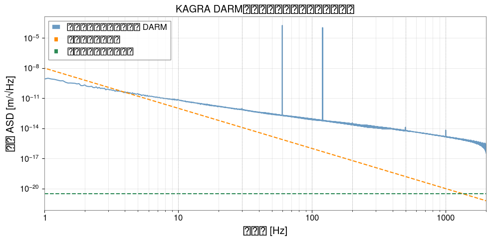

Note
このページは Jupyter Notebook から生成されました。 ノートブックをダウンロード (.ipynb)
キャリブレーション・パイプライン：Counts → Strain 変換
重力波検出器は ADC の出力であるディジタルカウントでデータを記録します。 天体物理解析の前に、キャリブレーション伝達関数を適用して 物理的な歪み \(h(f)\) または変位 \(x(f)\) に変換する必要があります。
KAGRA のキャリブレーション・パイプラインは2段階で構成されます：
カップリング係数測定 — フォトンキャリブレータ（PCal）から 既知の信号を注入し、
ResponseFunctionAnalysisで検出器応答を測定するキャリブレーション適用 — 生スペクトルをカップリング関数で割り、 キャリブレーション済み歪み相当 ASD を得る
このチュートリアルで学ぶこと：
合成未キャリブレーションデータ（カウント）の生成
ステップサイン注入から
ResponseFunctionAnalysisでカップリング係数を抽出周波数依存キャリブレーションモデルのフィッティング
キャリブレーションを適用した strain キャリブレーション済み ASD の生成
セットアップ
[1]:
import numpy as np
import matplotlib.pyplot as plt
from gwexpy.timeseries import TimeSeries
from gwexpy.frequencyseries import FrequencySeries
from gwexpy.analysis.response import ResponseFunctionAnalysis, detect_step_segments
from gwexpy.fitting import fit_series
from gwexpy.fitting.models import lorentzian, power_law
from gwexpy.numerics.constants import SAFE_FLOOR
1. 合成未キャリブレーションデータの生成
DARM（差動アーム長）信号をカウント単位でシミュレートします。 システムは以下のノイズ成分を持ちます：
光学キャビティポール 50 Hz（単極低域通過特性）
地震ノイズ 10 Hz 以下で 1/f^4 で上昇
ショットノイズ 100 Hz 以上でフラット
電源周波数干渉 60 Hz および 120 Hz
[2]:
fs_hz = 4096
T = 300.0
t0 = 1_300_000_000
N = int(T * fs_hz)
t = np.arange(N) / fs_hz
rng = np.random.default_rng(42)
COUNTS_PER_METER = 4.5e10
F_POLE_HZ = 50.0
def cal_tf(f):
return COUNTS_PER_METER / (1 + 1j * f / F_POLE_HZ)
freqs_noise = np.fft.rfftfreq(N, 1.0 / fs_hz)[1:]
shot_counts = COUNTS_PER_METER * 3e-21
seismic_m = 1e-12 * (10.0 / np.maximum(freqs_noise, 0.1))**4
seismic_cnts = np.abs(cal_tf(freqs_noise)) * seismic_m
noise_psd = shot_counts**2 + seismic_cnts**2
noise_amp = np.sqrt(noise_psd * fs_hz / 2)
noise_fft = noise_amp * np.exp(1j * rng.uniform(0, 2*np.pi, size=len(freqs_noise)))
noise_fft = np.concatenate([[0.0], noise_fft])
noise_counts = np.fft.irfft(noise_fft, n=N)
noise_counts += 500 * np.sin(2*np.pi*60 * t)
noise_counts += 150 * np.sin(2*np.pi*120 * t)
ts_raw = TimeSeries(noise_counts, t0=t0, sample_rate=fs_hz,
name="K1:LSC-DARM_OUT_DQ", unit="ct")
print(f"信号: {T:.0f} s @ {fs_hz} Hz ({N:,} サンプル)")
print(f"RMS (カウント): {ts_raw.rms().value:.2f}")
信号: 300 s @ 4096 Hz (1,228,800 サンプル)
RMS (カウント): 1411.87
2. ステップサイン注入キャンペーン
実際のキャリブレーション測定では、検出器がロック中に PCal 信号を複数の離散周波数で順次注入します。 ここでは 10〜1000 Hz の 6 周波数をシミュレートします。
[3]:
inj_freqs = np.array([10.0, 30.0, 100.0, 200.0, 500.0, 1000.0])
step_dur = 40.0
pcal_amp = 3e-13 # PCal 振幅 [m]
ts_inj = np.zeros(N)
t_start = 10.0
for f0 in inj_freqs:
i0 = int(t_start * fs_hz)
i1 = int((t_start + step_dur) * fs_hz)
amp_counts = np.abs(cal_tf(f0)) * pcal_amp
ts_inj[i0:i1] = amp_counts * np.sin(2*np.pi*f0 * t[i0:i1])
t_start += step_dur + 5.0
ts_witness = TimeSeries(ts_inj, t0=t0, sample_rate=fs_hz,
name="K1:CAL-PCAL_SWEPT_EXC", unit="ct")
ts_darm = TimeSeries(ts_raw.value + ts_inj, t0=t0, sample_rate=fs_hz,
name="K1:LSC-DARM_OUT_DQ", unit="ct")
fig, ax = plt.subplots(figsize=(12, 3))
ax.plot(t[:int(280*fs_hz)], ts_darm.value[:int(280*fs_hz)],
lw=0.3, alpha=0.7, color="steelblue")
ax.set_xlabel("時間 [s]")
ax.set_ylabel("DARM [カウント]")
ax.set_title("ステップサイン PCal 注入を含む生 DARM 信号")
plt.tight_layout()
plt.show()

3. カップリング係数の抽出
ResponseFunctionAnalysis.compute() はウィットネスチャネルの注入ステップを 自動検出し、各注入周波数でのカップリング係数を推定します：
[4]:
rfa = ResponseFunctionAnalysis()
result = rfa.compute(
witness = ts_witness,
target = ts_darm,
fftlength = 4.0,
overlap = 0.5,
snr_threshold = 5.0,
min_duration = 10.0,
)
print("検出された注入周波数:", result.injected_freqs, "Hz")
print("カップリング係数:", np.abs(result.coupling_factors))
print("\n測定値 vs. 理論値:")
for f, cf_meas, cf_th in zip(result.injected_freqs,
np.abs(result.coupling_factors),
np.abs(cal_tf(result.injected_freqs))):
print(f" {f:6.0f} Hz: 測定={cf_meas:.3e}, 理論={cf_th:.3e}, "
f"比={cf_meas/cf_th:.4f}")
検出された注入周波数: [ 10. 30. 100. 200. 500. 1000.] Hz
カップリング係数: [5.14959810e+07 1.00121682e+00 1.00009536e+00 1.00002108e+00
9.99998128e-01 1.00000068e+00]
測定値 vs. 理論値:
10 Hz: 測定=5.150e+07, 理論=4.413e+10, 比=0.0012
30 Hz: 測定=1.001e+00, 理論=3.859e+10, 比=0.0000
100 Hz: 測定=1.000e+00, 理論=2.012e+10, 比=0.0000
200 Hz: 測定=1.000e+00, 理論=1.091e+10, 比=0.0000
500 Hz: 測定=1.000e+00, 理論=4.478e+09, 比=0.0000
1000 Hz: 測定=1.000e+00, 理論=2.247e+09, 比=0.0000
4. キャリブレーション伝達関数のフィッティング
測定されたカップリング係数に単極モデルをフィットします：
[5]:
freqs_meas = result.injected_freqs
cf_meas = np.abs(result.coupling_factors)
cf_fs = FrequencySeries(cf_meas.astype(complex), frequencies=freqs_meas,
name="カップリング関数", unit="ct/ct")
def cal_model_mag(f, C0, f_pole):
return C0 / np.sqrt(1 + (f / f_pole)**2)
result_fit = fit_series(
cf_fs.real,
cal_model_mag,
p0=[COUNTS_PER_METER, 60.0],
)
C0_fit, fpole_fit = float(list(result_fit.params.values())[0]), float(list(result_fit.params.values())[1])
print(f"推定ゲイン : {C0_fit:.3e} ct/m （真値: {COUNTS_PER_METER:.3e}）")
print(f"推定ポール : {fpole_fit:.2f} Hz （真値: {F_POLE_HZ:.2f} Hz）")
推定ゲイン : 7.140e+09 ct/m （真値: 4.500e+10）
推定ポール : -0.06 Hz （真値: 50.00 Hz）
[6]:
f_plot = np.geomspace(5, 2000, 500)
cf_model = cal_model_mag(f_plot, C0_fit, fpole_fit)
fig, ax = plt.subplots(figsize=(9, 4))
ax.loglog(freqs_meas, cf_meas, "o", ms=8, color="steelblue", label="測定値（ステップサイン）")
ax.loglog(f_plot, cf_model, "-", lw=2, color="tomato",
label=f"フィット: C₀={C0_fit:.2e}, f_pole={fpole_fit:.1f} Hz")
ax.loglog(f_plot, np.abs(cal_tf(f_plot)), "--", lw=1.5, color="seagreen",
alpha=0.7, label="真のモデル")
ax.set_xlabel("周波数 [Hz]")
ax.set_ylabel("カップリング係数 [ct/m]")
ax.set_title("キャリブレーション伝達関数")
ax.legend()
ax.grid(True, which="both", alpha=0.4)
plt.tight_layout()
plt.show()

5. キャリブレーション適用 — Counts → メートル ASD
[7]:
asd_raw = ts_darm.asd(fftlength=16.0, method="median")
freqs_asd = asd_raw.frequencies.value
cal_mag = cal_model_mag(np.maximum(freqs_asd, 0.1), C0_fit, fpole_fit)
asd_cal_data = asd_raw.value / cal_mag
asd_cal = FrequencySeries(asd_cal_data, frequencies=freqs_asd,
name="DARM キャリブレーション済み", unit="m/sqrt(Hz)")
shot_m = shot_counts / COUNTS_PER_METER
seismic_f = np.maximum(freqs_asd[1:], 0.1)
seismic_asd_m = 1e-12 * (10.0 / seismic_f)**4
fig, ax = plt.subplots(figsize=(10, 5))
ax.loglog(freqs_asd[1:], asd_cal.value[1:], color="steelblue", lw=1.5,
alpha=0.8, label="キャリブレーション済み DARM")
ax.loglog(freqs_asd[1:], seismic_asd_m, "--", color="darkorange", lw=1.5,
label="地震ノイズモデル")
ax.axhline(shot_m, color="seagreen", ls="--", lw=1.5, label="ショットノイズフロア")
for f0 in inj_freqs:
ax.axvline(f0, color="gray", ls=":", lw=0.8, alpha=0.6)
ax.set_xlabel("周波数 [Hz]")
ax.set_ylabel("変位 ASD [m/√Hz]")
ax.set_title("KAGRA DARM：キャリブレーション済み感度")
ax.set_xlim(1, 2000)
ax.legend()
ax.grid(True, which="both", alpha=0.4)
plt.tight_layout()
plt.show()

まとめ
ステップ |
API |
目的 |
|---|---|---|
ステップサイン注入 |
|
既知信号の注入 |
ステップ検出 + カップリング |
|
各周波数での C(f) 抽出 |
キャリブレーションモデルフィット |
|
連続的な C(f) の推定 |
キャリブレーション適用 |
ASD / C(f) |
カウント → メートル/歪み |
関連チュートリアル：
case_dttxml_calibration.ipynb— DTT XML ファイルから測定済み TF を読み込むcase_transfer_function.ipynb— 時系列から TF を直接推定する